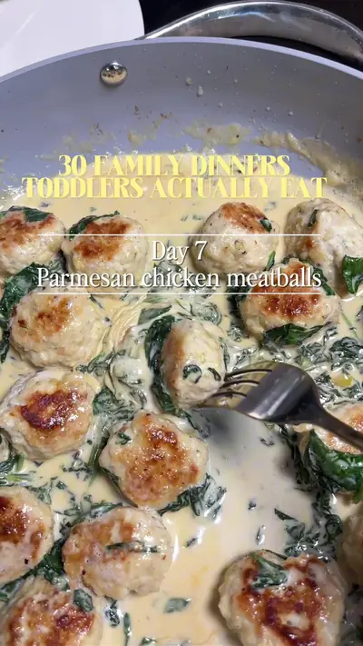

Parmesan Chicken Meatballs

Ingredients
- Meatballs
- 1 lb ground chicken breast
- ½ cup grated Parmesan
- ¼ cup breadcrumbs
- 1 egg
- 2 garlic cloves
- 1 tsp oregano or Italian seasoning
- Salt (1 year+ only)
- Black pepper Sauce
- 1 tbsp butter
- 2 garlic cloves
- 1 cup heavy cream
- ½ cup grated Parmesan
- 4 cups chopped spinach
Steps
- Mix and shape the meatballs
- Cook until golden
- Make the creamy spinach Parmesan sauce
- Return the meatballs to the pan and simmer until coated
Recipe text as written by @soniamazri on TikTok. Open original